Co kde stálo
Poloha všech domů pochází z GIS vrstvy projektu, která je vektorizací historického plánu města Mostu z roku 1938. Ulice v ní vede jako U Pražské brány (něm. Am Prager Tor) s 6 budovami, všechny s číslem popisným. Dům 251 je v GIS veden pod touž ulicí, ale průčelím hledí do Šmeralova náměstí. Kliknutím na dům v mapě otevřete jeho stránku.
Šířky parcel v GIS u domů 449 a 495 neodpovídají stavebním plánům (1891, 1930) ani zaměření z roku 1972: model používá plánové šířky 15,0 m a 5,83 m a zbytek řady (25,8 m) připadá domu 250; kanonický GIS se nemění (viz Rozpory).
Úseky ulice
- N · jižní strana Šmeralova náměstí (u ústí ulice): 251
- Z · západní strana ulice (od náměstí k Fučíkovým sadům): 250, 495, 449
- V · východní strana ulice (od náměstí k Rybalkově): 247, 249
Databázová oblast „U Pražské brány“ a co modelováno není
Oblast U Pražské brány v databázi Libuše obsahuje 7 struktur (při živém načtení 23. 10. 2026 byly sloučeny dřívější dvě oblasti a nově přibyla struktura 251). Jedna struktura obsahuje jen pohlednice a leží podle GIS v jiné ulici; její přílohy jsme načetli a prohlédli, modelována není:
| Čp. | Poznámka | Ulice podle GIS | Přílohy |
|---|---|---|---|
| 245 | jen čtyři pohlednice (letecké snímky ~1920), dům stojí v GIS pod Rozmarýnovou – nemodelován v této dávce | v GIS není | 4 |
Odkud jsou prameny
Fotodokumentace KSPPOP 1965–1975
Ulici zachycuje fotodokumentace Krajského střediska státní památkové péče a ochrany přírody v Ústí nad Labem z let 1965–1975 (karty s popisem stanoviště a sousedů, fotograf Záša 1974, Čermák 1973, Poláček 1974, Villert ~1970, Šejner ~1965) a soubor „Komplet: Starý Most“. Domy na snímcích stojí, nároží 449 a 249 jsou zachycena z křižovatky, celá západní řada z plochy náměstí a pohled z věže piaristického kostela ukazuje střechy a zadní stěny 250, 495 a 449. Cílová epocha modelu jsou 60.–70. léta.
Zaměření 1972–1974 a stavební plány 1891–1930
Pro domy 249, 449 a 495 existují zaměření z let 1972–1974 (O. Horáková: půdorysy přízemí 1:50; V. Novák: průčelí 1:50) pořízená před demolicí. Starší stavební plány jsou plán F. Griesbacha z roku 1891 pro nárožní dům 449 (kótovaný půdorys 15,00 × 17,50 m), plán krámského portálu O. Zienerta z roku 1930 pro 495 (průčelí 5,83 m) a projekty C. Hinkeho z let 1898–1928 pro dvorní křídlo domu 249. Projekt není realizace: model sleduje fotografii, kde se liší (495 má na plánu 1930 tři okna v patře, na fotografii dvě). Ke každému domu patří i ruční náčrt střech KSPPOP s čísly sousedů, který dává členění střech.
Databáze Libuše projektu MOST
Seznamy příloh jsme načetli živě 23. 10. 2026, pouze pro čtení (0 zápisů). Oblast U Pražské brány má 7 struktur a 203 příloh (161 různých souborů podle SHA-256): 50 plánů a výkresů, 45 fotografií, 32 archivních karet, 12 pohlednic, 14 kolorovaných odvozenin a 50 dalších odvozenin bez tagu. Kromě toho jsme otevřeli 550 příloh 25 struktur sousedních oblastí (Rozmarýnová, Šmeralovo náměstí, Leninova, U jeptišek, Elišova), na kterých jsou domy ulice v pozadí nebo z náměstí.
Odvozeniny
Kolorované snímky a výřezy v databázi jsou rekonstrukce, ne prameny. O tvaru, otvorech a nápisech rozhoduje původní černobílá fotografie nebo plán.
GIS a terén
Polohy a natočení domů jsou z GIS vrstvy (vektorizace plánu 1938, místní souřadnice). Šířky parcel u 449 a 495 GIS udává chybně (12,0 a 7,6 m proti 15,0 a 5,83 m z plánů), proto model používá plánové šířky a dům 250 dostává zbytek řady. Výšky budov v GIS jsou jen náhodný zástupný údaj: výšky domů jsou ze zaměření 1974 (249, 449) a z fotografií. Terén je zatím plochý (výška ulice z = 0 u všech domů), ačkoli ulice klesá od náměstí k sadům; je to provizorní hypotéza.
Jak vznikla geometrie
- Rešerše plánů. Nejdříve jsme prohledali databázi stavebních plánů: všech 203 příloh oblasti a 550 příloh sousedních oblastí jsme otevřeli na kontaktních listech, karty jsme četli v plné velikosti a listy použité pro geometrii v plném rozlišení (titulek, datum, měřítko, uliční nebo dvorní objekt, sousedé). Dva listy ve struktuře 495 patří jiným domům a byly vyřazeny.
- Identita a pořadí domů. Popisy stanovišť na kartách KSPPOP, náčrty střech s čísly sousedů a situační plánky z let 1891, 1899 a 1930 určují pořadí od náměstí: západ 251 (jen do náměstí) – 250 – 495 – 449, východ 247 – 249. Šířky z GIS jsme ověřili proti plánům a poměrům na fotografiích.
- Fasáda jen z fotografie nebo zaměření s domem v rámečku. Na každém použitém snímku je dům v červeném rámečku a každý otvor má ID (G okna přízemí, U okna patra, M okna 1. patra, D dveře, S výkladce, A nebo O štítová okénka a volská oka, E_ a Q_ a S_ pro druhé fasády). Počty otvorů z rámečků kontroluje brána proti plánu modelu; otvory, které snímek neukazuje, jsou přiznané hypotézy.
- Měřítko. Výšky dávají zaměření V. Nováka z roku 1974 (145 px/m, ověřeno kótou plánu 1891 u domu 449), u ostatních domů poměry na fotografiích; vodorovné polohy u šikmých snímků perspektivní přepočet. Kde se projekt liší od realizace, model sleduje fotografii.
- Střecha. Členění střech je z ručních náčrtů KSPPOP (ulice vždy dole), sklony a hřebeny ze siluet zaměření a fotografií; střecha hotového modelu se změří ze sítě.
- Stavba v Blenderu. Parametrický builder bez okna (
build_house_20261028.py, odvozený z builderu U hřiště, Rudolfovy a Kulové; nově štítová zeď do ulice s volským okem a opravené uzavření podkroví nad přístavky) vyrobí zgeometry_plan.jsonBLEND a GLB. Otvory jsou skutečné niky, volská oka otevírají krytinu, materiály jsou jen ID pro pozdější textury. - Kontrola. Brána geometrie (prosvítání podkroví paprsky, nekryté zdivo, střecha nad prázdnem, UV, síť, počty otvorů) a vizuální kontrola: pohledy s materiály a bez barev (čtyři strany, čtyři rohy shora, dva podhledy u okapu, shora), detaily otvorů a záznam kontroly. Dům se do ulice umístí až po prošlé bráně a prohlédnuté sadě.
- Sestava ulice. Registr
street_layout_gis.jsondrží polohu, natočení a revizi každého domu (rámec X = východ, Y = sever); okolní budovy z GIS zastupují v sestavě šedé bloky.
Pracovní složka: F:\MOST\output\u_prazske_brany_street_claude_2026-10-23\ (domy, kontroly, registr poloh; prameny jen ke čtení).
Domy ulice
Domy jsou seřazené po stranách ulice od náměstí. U domů se štítkem je část podoby hypotézou; štítek je stejný na stránce domu, v tabulce, v anglické verzi i v okně 3D prohlížeče.
N · jižní strana Šmeralova náměstí (u ústí ulice)
Z · západní strana ulice (od náměstí k Fučíkovým sadům)
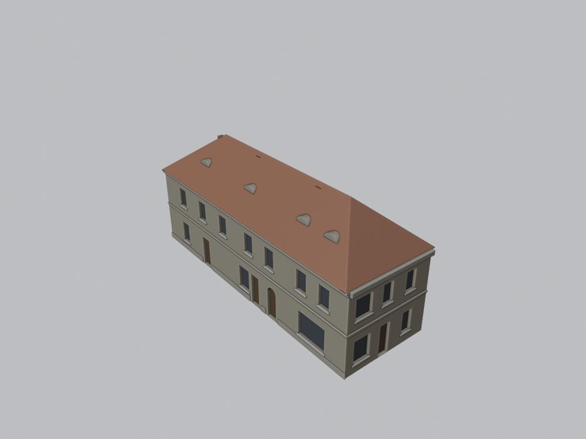
dlouhý nárožní dům s pohřební službou a trafikou
27 příloh v databázi · revize r1
zatím bez textur
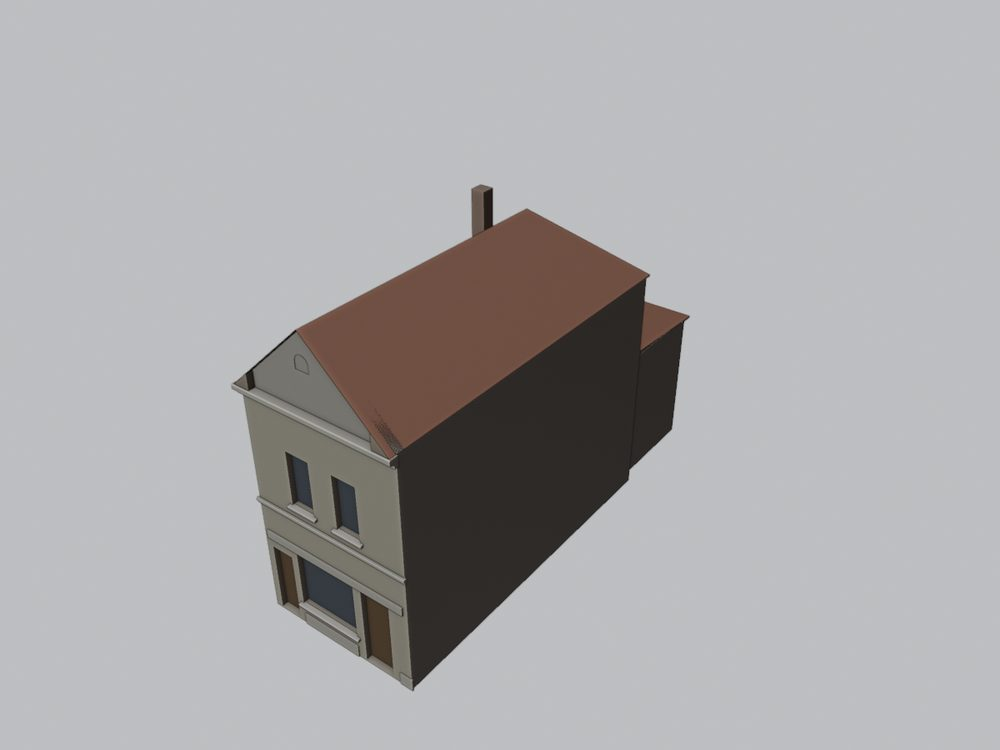
úzký dům s řeznictvím a štítem do ulice
26 příloh v databázi · revize r1
zatím bez textur
Jižní průčelí je zaměřeno (1974) a fotografováno; uliční fasáda je doložena jen šikmými fotografiemi a projektem 1891 (přízemí = projekt).
nárožní dům u Fučíkových sadů s krámy a balkonem
45 příloh v databázi · revize r1
bez textur (částečně hypotéza – jen prosté materiály)
V · východní strana ulice (od náměstí k Rybalkově)
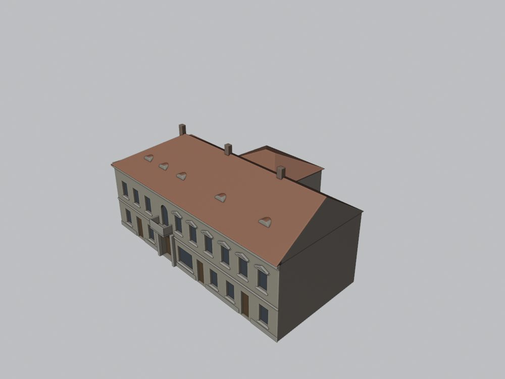
Dům je doložen jen šikmými fotografiemi 1970–74 a náčrtem střech; plány chybějí – výšky, osy a zadní budovy jsou hypotéza.
spojený nárožní dům u náměstí s portálem a balkonem
34 příloh v databázi · revize r1
bez textur (částečně hypotéza – jen prosté materiály)
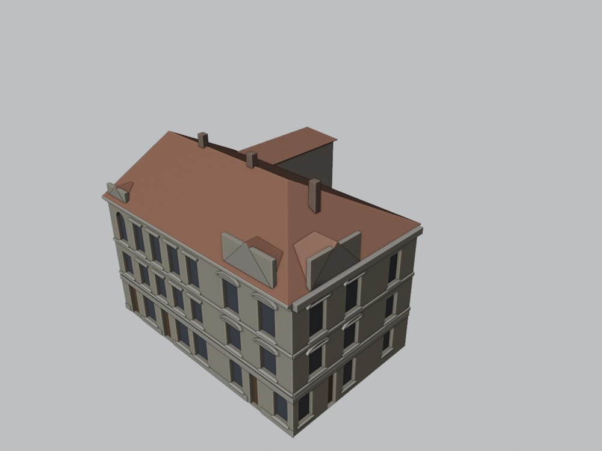
Jižní dvouosá štítová fasáda je zaměřena (1974) a fotografována; uliční fasáda a zadní křídlo jsou odvozeny ze šikmých fotografií a náčrtu – osy a výšky jsou hypotéza.
třípodlažní nárožní dům u Rybalkovy se třemi štíty
56 příloh v databázi · revize r1
bez textur (částečně hypotéza – jen prosté materiály)
Souhrnná tabulka
| Čp. | Úsek | Typ | Podlaží | Průčelí × okap (m) | GIS budova (popisek) | Přílohy | Revize | Stav |
|---|---|---|---|---|---|---|---|---|
| 251 | N | přízemní dům s patrem do náměstí, zadní sklad částečně hypotéza Patro a střecha podle fotografie 1974; přízemí je na snímku zakryto autobusy a je hypotéza, hranice s 250 odečtena ze střechy. | 2 | 12,4 × 7,8 | 329 (251) | 11 | r1 | ve 3D |
| 250 | Z | dlouhý nárožní dům s pohřební službou a trafikou | 2 | 25,8 × 7,5 | 330 (250) | 27 | r1 | ve 3D |
| 495 | Z | úzký dům s řeznictvím a štítem do ulice | 2 + štít | 5,8 × 8,6 | 331 (495) | 26 | r1 | ve 3D |
| 449 | Z | nárožní dům u Fučíkových sadů s krámy a balkonem částečně hypotéza Jižní průčelí je zaměřeno (1974) a fotografováno; uliční fasáda je doložena jen šikmými fotografiemi a projektem 1891 (přízemí = projekt). | 2 + štít | 17,5 × 8,2 | 332 (449) | 45 | r1 | ve 3D |
| 247 | V | spojený nárožní dům u náměstí s portálem a balkonem částečně hypotéza Dům je doložen jen šikmými fotografiemi 1970–74 a náčrtem střech; plány chybějí – výšky, osy a zadní budovy jsou hypotéza. | 2 | 27,3 × 8,3 | 333 (247) | 34 | r1 | ve 3D |
| 249 | V | třípodlažní nárožní dům u Rybalkovy se třemi štíty částečně hypotéza Jižní dvouosá štítová fasáda je zaměřena (1974) a fotografována; uliční fasáda a zadní křídlo jsou odvozeny ze šikmých fotografií a náčrtu – osy a výšky jsou hypotéza. | 3 + štíty | 20,0 × 10,8 | 335 (249) | 56 | r1 | ve 3D |
Šířka průčelí je z GIS nebo z rektifikované fotografie, výška okapu je odhad z plánů a fotografií. „Rozpracováno“ = plán modelu existuje, dům ještě není v sestavě ulice;
Rozpory a hypotézy
- 449 a 495: šířky parcel v GIS proti plánům. GIS dává domu 449 jen 12,0 m do ulice a 10,9 m do Fučíkových sadů, plán F. Griesbacha z roku 1891 kótuje 15,00 × 17,50 m; dům 495 má v GIS 7,6 m, plán portálu z roku 1930 i zaměření z roku 1972 dávají 5,83 m. Součet západní řady (46,6 m) v GIS souhlasí, posunuté jsou jen dělicí zdi, a tak dům 250 dostává zbytek 25,8 m. Kanonický GIS zůstává beze změny.
- 249: zaměřené průčelí je 7,65 m široké, GIS bok 12,46 m. List „PRŮČELÍ 1:50, V. Novák 1974“ má stejné měřítko skenu jako list domu 449 (145 px/m), takže zaměřená dvouosá fasáda s volutovým štítem je 7,65 m široká; GIS i náčrt střech dávají jižnímu boku 12,5–13 m. Fotografie z roku 1974 navíc ukazují tři štíty (malý severní, střední nad dvouosou částí uliční fasády a velký na jižní fasádě). Model klade zaměřenou jednotku od nároží na jižní fasádu a její skladbu používá i pro štítovou část uliční fasády; zbytek a osy uliční fasády jsou hypotéza.
- 250: zadní část podle GIS, nebo podle náčrtu. GIS polygon je hlubší v jižní polovině u domu 495, náčrt střech KSPPOP kreslí zadní křídlo s dvorkem naopak u náměstí. Model drží GIS: hlavní blok 8,5 m hluboký a nízký jižní přístavek s pultovou střechou; tři volská oka do náměstí z náčrtu nejsou modelována.
- 495: cizí listy ve struktuře. Dva plány uložené u domu 495 patří jiným stavbám (čp. 268 v Minoritské ulici, 1885; hospodářská budova téhož stavebníka ve Friedhofsstraße, 1929) a nebyly použity. Plán z roku 1930 kreslí v patře tři okna, fotografie z roku 1974 ukazuje dvě: model sleduje fotografii.
- 251: nová struktura v živé databázi. Snapshot z 11. 9. 2026 strukturu 251 neznal; při živém načtení 23. 10. 2026 má fotografii, kartu a náčrt střech. Přízemí je na jediném snímku zakryté autobusy, proto je hypotéza a styk s domem 250 je odečten ze změny střešní plochy.
- 247: spojený dům bez plánů. Dvě historické části pod jedním číslem jsou doloženy jen šikmými snímky z let 1970–1974 a náčrtem střech; výšky, osy, krámy přízemí a zadní budovy jsou hypotéza, poloha portálu s balkonem (10,3 m od nároží) je z náčrtu.
- 449: uliční fasáda jen šikmo. Jižní průčelí do sadů je zaměřeno (4 osy, štít se dvěma okénky), uliční východní fasáda je na šikmých snímcích: tři osy patra s balkonem a štítem jsou spočtené, výkladce a vstup v přízemí jsou podle projektu z roku 1891.
- Výšky a terén. Výšky podlaží, říms a střech jsou ze zaměření 1974 (249, 449) a z poměrů na fotografiích; sklony střech jsou odhady. Terén je plochý (z = 0), ačkoli ulice klesá od náměstí k sadům; historický výškopis nebyl k dispozici.
- Dvorní a nedoložené strany jsou bez otvorů, pokud je žádný pramen neukazuje.
Údaje jsou v datech označené jako model_hypothesis, status: provisional, locked: false.
Kniha nesouladů pramenů
Případy, kdy si prameny odporují (plán proti fotografii, GIS proti plánu, chybně zařazený list), zapisujeme do interní knihy nesouladů pramenů projektu MOST. Ta se zatím nepublikuje, proto zde uvádíme jen identifikátory případů této ulice (4):
2026-10-28_u-prazske-brany_249-novak-7m-vs-gis-12m-tri-stity– U Pražské brány 249: zaměřené průčelí Nováka 1974 je 7,65 m široké, GIS bok do Rybalkovy má 12,46 m; dům má tři štíty2026-10-28_u-prazske-brany_250-hlubsi-cast-gis-vs-nacrt– U Pražské brány 250: GIS má hlubší část půdorysu u 495, náčrt střech kreslí zadní křídlo u náměstí2026-10-28_u-prazske-brany_449-495-sirky-gis-vs-plany– U Pražské brány 449 a 495: GIS šířky parcel neodpovídají stavebním plánům, rozdíl pohlcuje sousední 2502026-10-28_u-prazske-brany_zivy-get-vs-snapshot-251– U Pražské brány: živá databáze sloučila dvě oblasti a přidala strukturu 251 – snapshot z 11. 9. 2026 ji neznal
Textury (Codex)
Geometrie na této stránce je bez textur. Texturované domy bude připravovat Codex na kopiích těchto modelů a doplňovat je postupně: každý dům jako vlastní GLB v models/textured/ a záznam v data/textures.json. Prohlížeč ulice i domu pak sám nabídne povrch Textury (Codex) a texturované domy vloží na jejich místo v ulici; domy se štítkem hypotézy dostanou jen prosté materiály.
| Čp. | Revize geometrie | Stav textur |
|---|---|---|
| 251 | r1 | bez textur (částečně hypotéza – jen prosté materiály) |
| 250 | r1 | zatím bez textur |
| 495 | r1 | zatím bez textur |
| 449 | r1 | bez textur (částečně hypotéza – jen prosté materiály) |
| 247 | r1 | bez textur (částečně hypotéza – jen prosté materiály) |
| 249 | r1 | bez textur (částečně hypotéza – jen prosté materiály) |
Soubory ke stažení
- Celá ulice, GLB (bez zabalených obrázků, materiálová ID)
- GLB jednotlivých domů jsou na jejich stránkách.
- Mapa „co kde stálo“, SVG
- Zpráva v Markdownu se seznamem pramenů všech domů a hashi příloh
- Přehled domů, JSON · Stav textur, JSON · Původ každého souboru tohoto webu

Rendery ulice
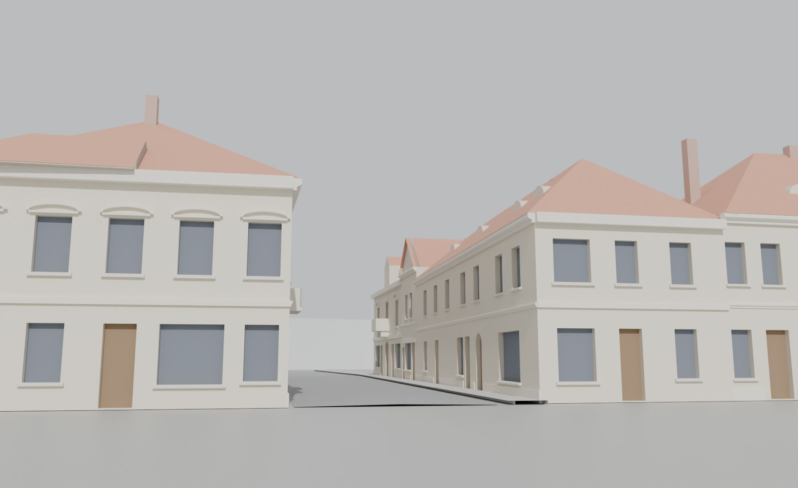

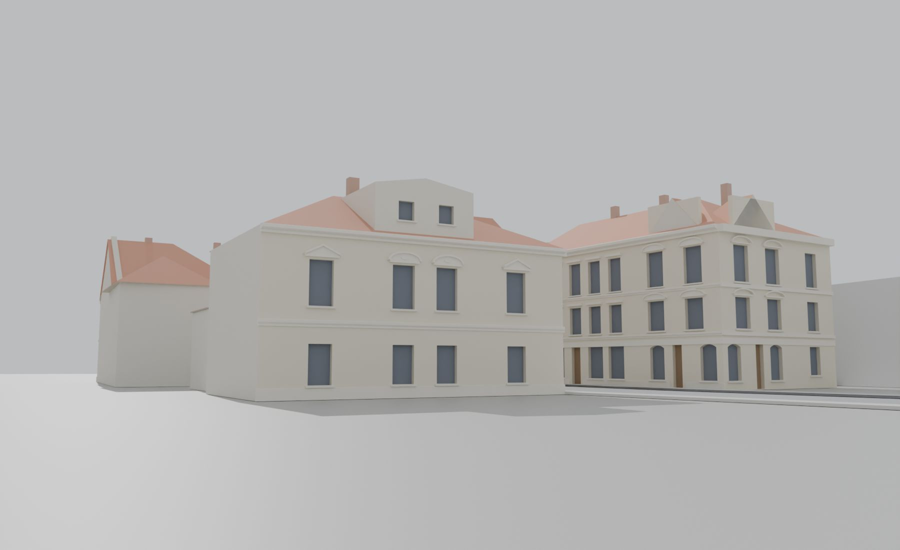
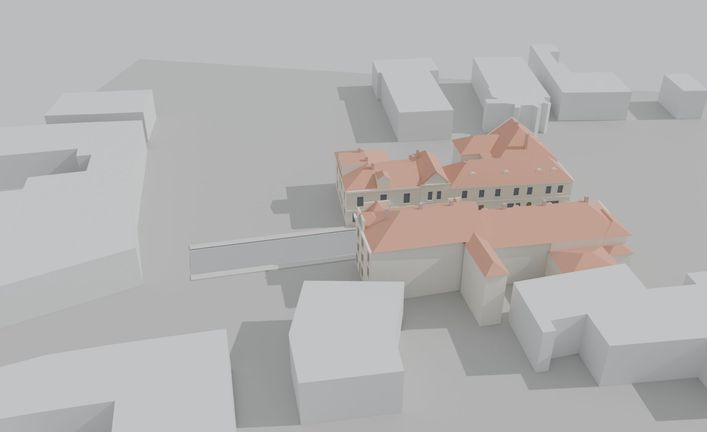
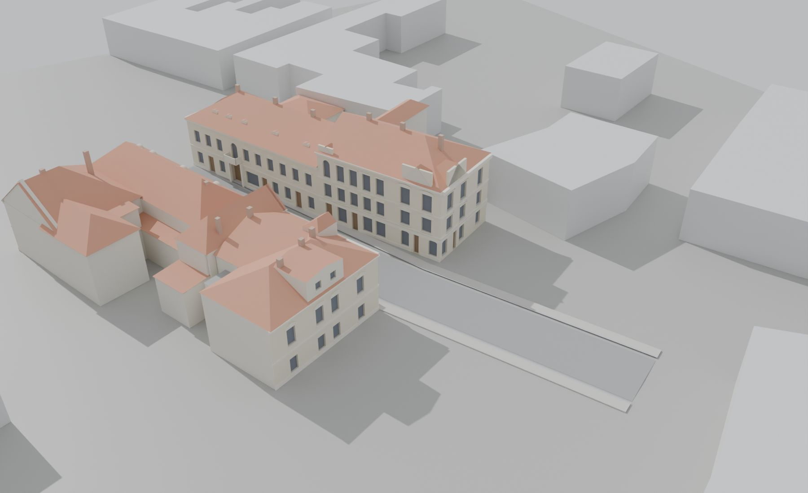
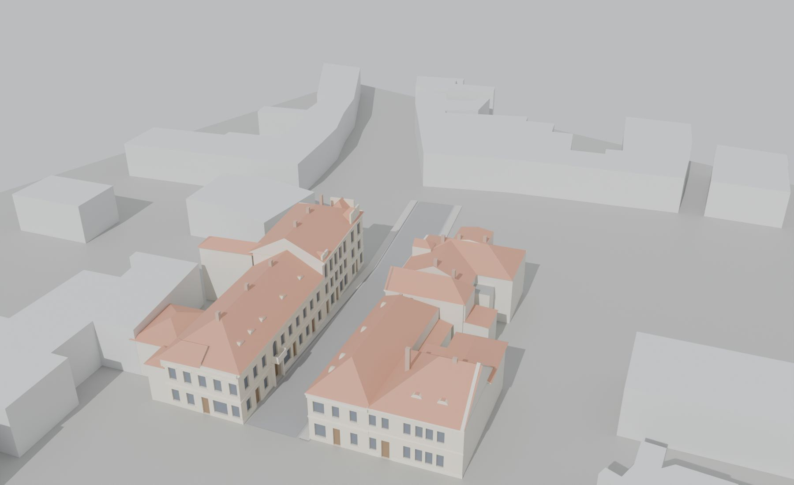
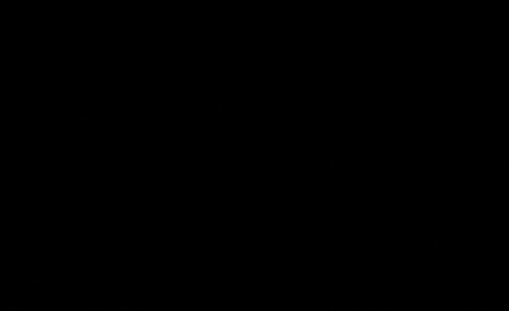
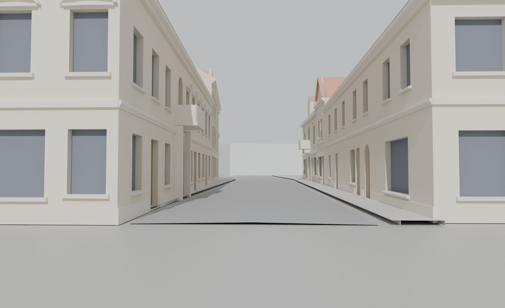
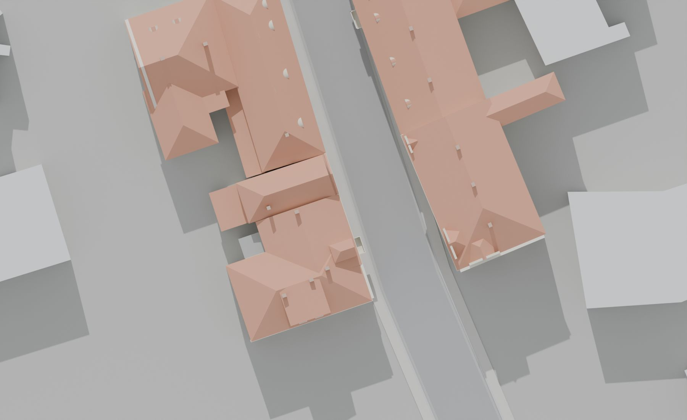